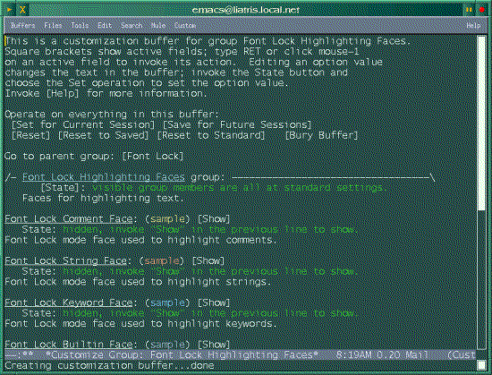

![[ TABLE OF CONTENTS ]](../gx/indexnew.gif)
![[ FRONT PAGE ]](../gx/homenew.gif)


Richard Stallman and the other members of the GNU Emacs development team are a rather reticent group of programmers. Unlike many other development projects in the free-software world, the Emacs beta program is restricted to a closed group of testers, and news of what progress is being made is scanty. In the past couple of months hints found in various usenet postings seemed to intimate that a new release of GNU Emacs was imminent, so every now and then I began to check the GNU main FTP site on the off-chance that a release had been made.
Early on the morning of September 17 I made a quick check before beginning my day's work, and there it was, a new Emacs 20.1 source archive. As with all Emacs source packages, it was large (over 13 megabytes) so I began the download with NcFtp and left it running.
There is always a delay between the release of a new version of a software
package and the release of a Linux distribution's version, such as a Debian or
RedHat binary package. Even if you usually use RPMs or *.deb releases
(in many cases it's preferable) a source release of a major team-developed
piece of software such as GNU Emacs will usually build easily on a reasonably
up-to-date Linux machine. The included installation instructions are clear:
just run the configure script, giving your machine-type and preferred
installation directory as switches. In my case, this command did the trick:
./configure i586-Debian-linux-gnu --prefix=/mt
The script will generate a Makefile tailored to your machine; make, followed by make install and you're up and running.
It's been about a year since the last public GNU Emacs release, so there have been quite a few changes. One of the largest is the incorporation of the MULE (MUltiLingual Emacs) extensions, which give Emacs the capability of displaying extended character sets necessary for languages such as Chinese and Japanese. This won't be of interest to most English-speaking users, but if you're interested the necessary files are in a separate archive at the GNU site.
Here's a partial list of changes and updated packages:
Have you ever been puzzled or annoyed by the peculiar way the Emacs screen scrolls when using the up- or down- arrow keys? It's a jerky scroll, difficult for the eye to follow, which could only be partially alleviated by setting scroll-step to a small value. In 20.1 this has been changed, so that if you set scroll-step to 2 (setq scroll-step 2) the screen actually scrolls up and down smoothly, without the disorienting jerks. This feature alone makes the upgrade worthwhile!
Another Emacs quirk has been addressed with a new variable,
scroll-preserve-screen-position. This variable, if set to t
(which means "yes"), will allow the user to page-up and page-down and then
returns the cursor to its original position when the starting page is shown
again. I really like this. With the default behavior you have to find the
cursor on the screen and manually move it back to where it was. This variable
can be enabled with the line
(setq scroll-preserve-screen-position t)
entered into your ~.emacs init file.
What a labor-saver! Rather than searching for the documentation which
deals with altering one of Emacs' default settings, the user is presented with
a mouse-enabled screen from which changes can be made, either for the current
session or permanently, in which case the changes are recorded in the user's
~.emacs file. It appears that a tremendous amount of work went into
including the customization framework in the LISP files for Emacs' countless
modes and add-on packages. A Customize screen can be summoned from the
Help menu; the entries are in a cascading hierarchy, allowing an easy
choice of the precise category a user might want to tweak. Here's a
screenshot of a typical Customization screen:

Per Abrahamsen is to be congratulated for writing this useful utility, and for making it effective both for XEmacs and GNU Emacs users.
Emacs used to be thought of as a hefty, memory-intensive editor which tended to strain a computer's resources. Remember the old mock-acronym, Eight Megabytes And Constantly Swapping? These days it seems that the hardware has caught up with Emacs; today a mid-range machine can run Emacs easily, even with other applications running concurrently. Memory and hard-disk storage have become less expensive which makes Emacs usable for more people.
Some people are put off by the multiple keystrokes for even the most common commands. It's easy to rebind the keys, though. The function keys are handy, as they aren't in use by other Emacs commands. As examples, I have F1 bound to Kill-Buffer, F2 bound to Ispell-Word (which checks the spelling of the word under the cursor), F3 and F4 put the cursor at the beginning or end of the current file, and F7 is bound to Save-Buffer. Of course, these operations are on the menu-bar, but using the keyboard is quicker. If you are accustomed to a Vi-style editor, the Viper package allows toggling between the familiar Vi commands (which are extraordinarily quick, as most are a single keystroke) and the Emacs command set. This emulation mode has been extensively improved lately, and is well worth using.
Even with the exhaustively detailed Info files, the tutorial, etc. I would hesitate to recommend Emacs for a novice Linux user. There is enough to learn just becoming familiar with basic Linux commands without having to learn Emacs as well. I think Nedit would be a more appropriate choice for a new user familiar with Windows, OS/2, or the Macintosh, since its mouse-based operation and menu structure are reminiscent of editors from these operating systems.
Emacs has a way of growing on you; as your knowledge of its traits and capabilities increases the editor gradually is molded to your preferences and work habits. It is possible to use the editor at a basic level, (using just the essential commands), but it's a waste to run a large editor like Emacs without using at least some of its manifold capabilities.